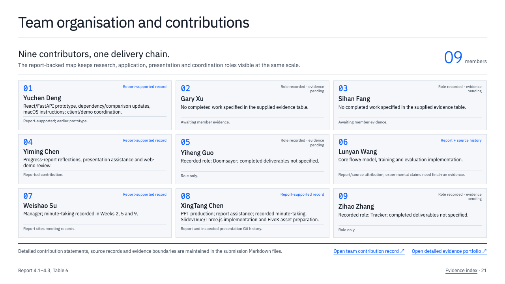
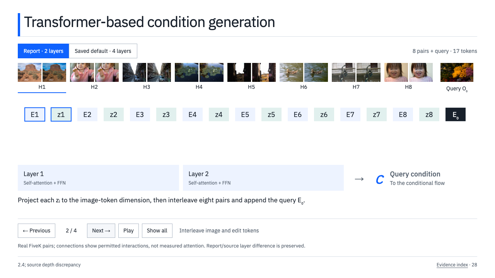
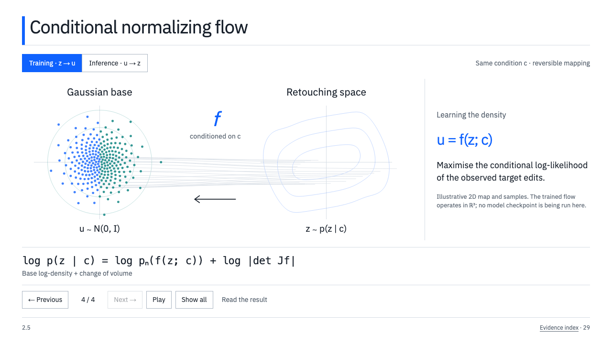
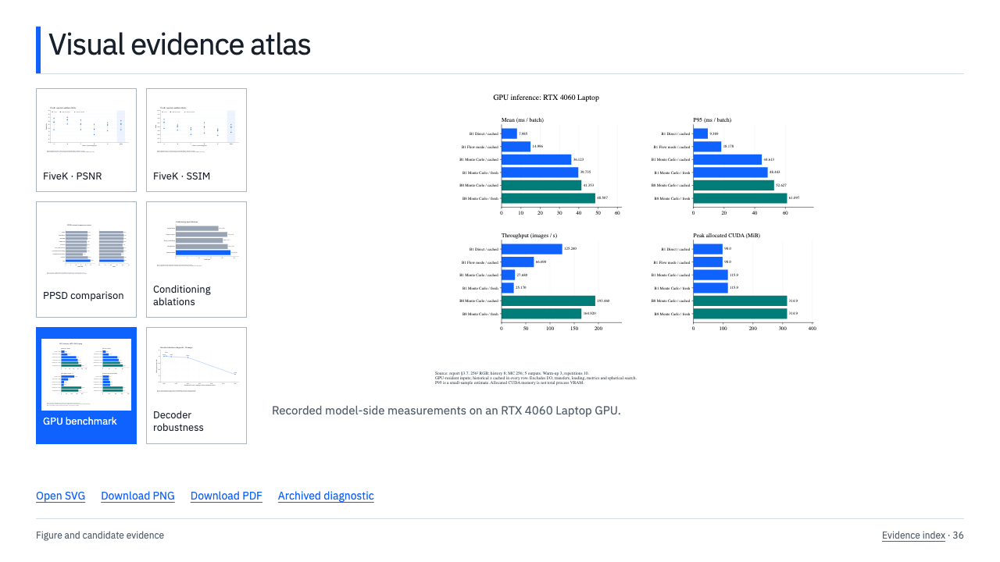
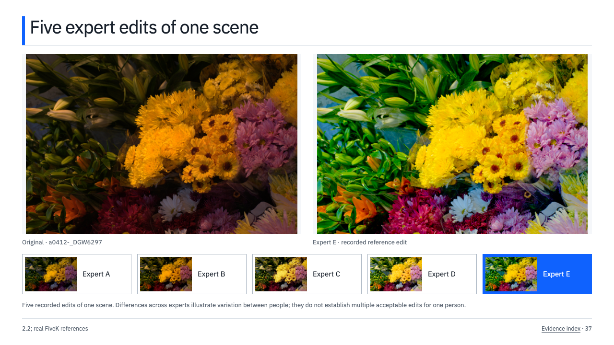
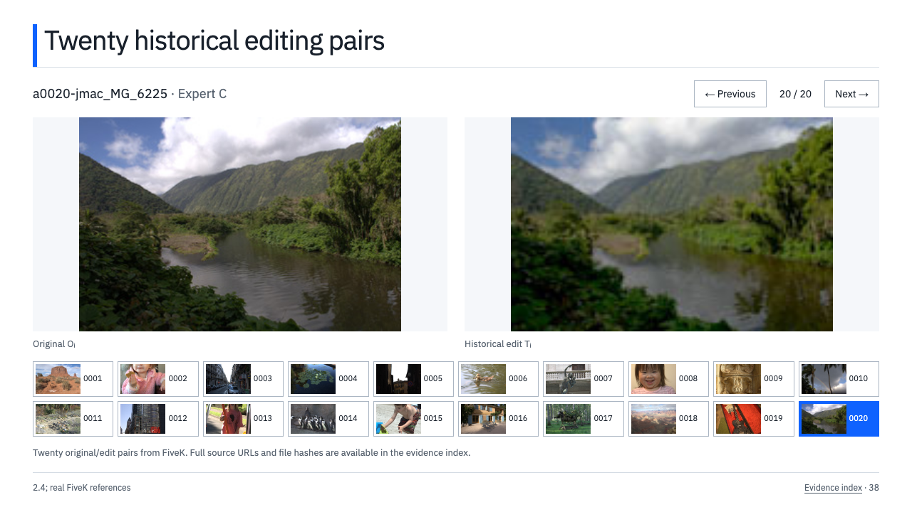
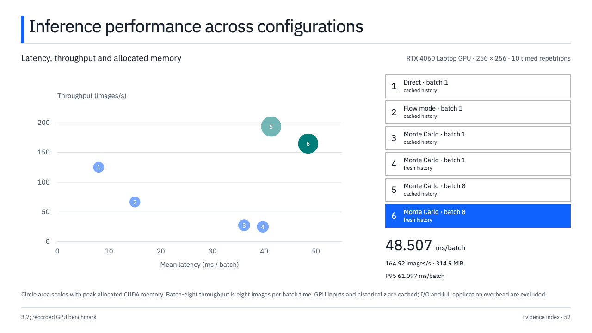
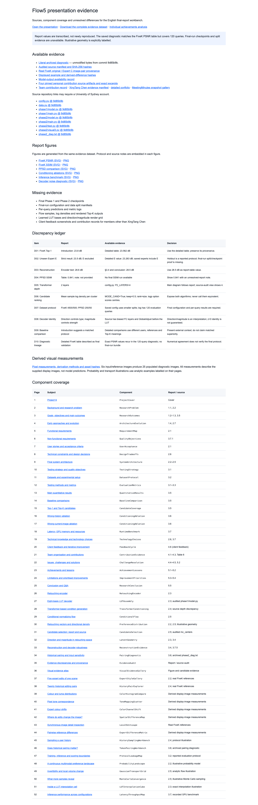
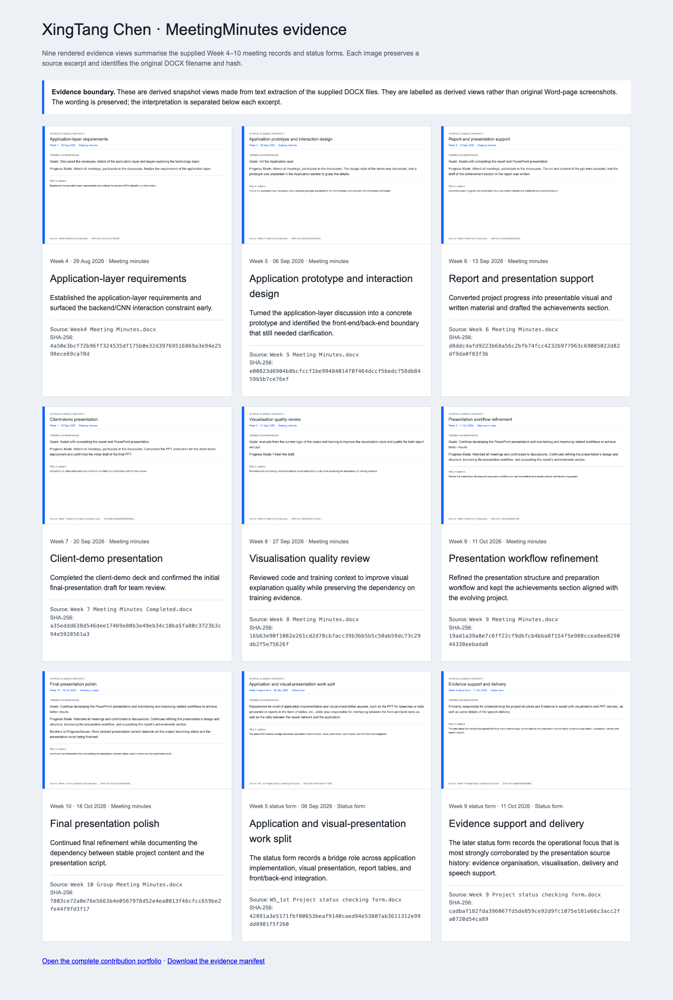
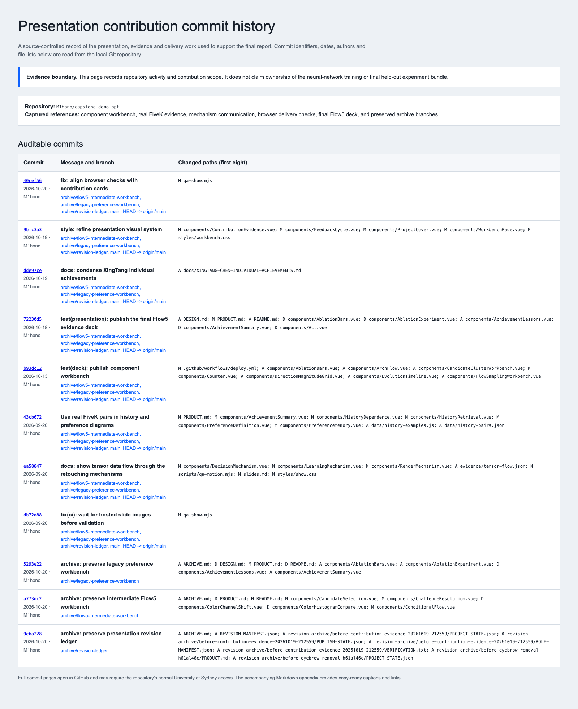

Appendix evidence pack
Screenshots and source links for the final Flow5 presentation, XingTang Chen’s presentation/evidence contribution, and the preserved work history.
Evidence boundary. The presentation screenshots show the delivered English workbench. The commit-history capture is generated from repository metadata. MeetingMinutes images are derived evidence views from the supplied DOCX records and retain their source filenames and hashes.
Open the final presentation ·
Open the evidence index ·
Open the MeetingMinutes gallery ·
Open the commit-history record ·
Download commit metadata ·
Download screenshot manifest
Presentation evidence







Evidence records


